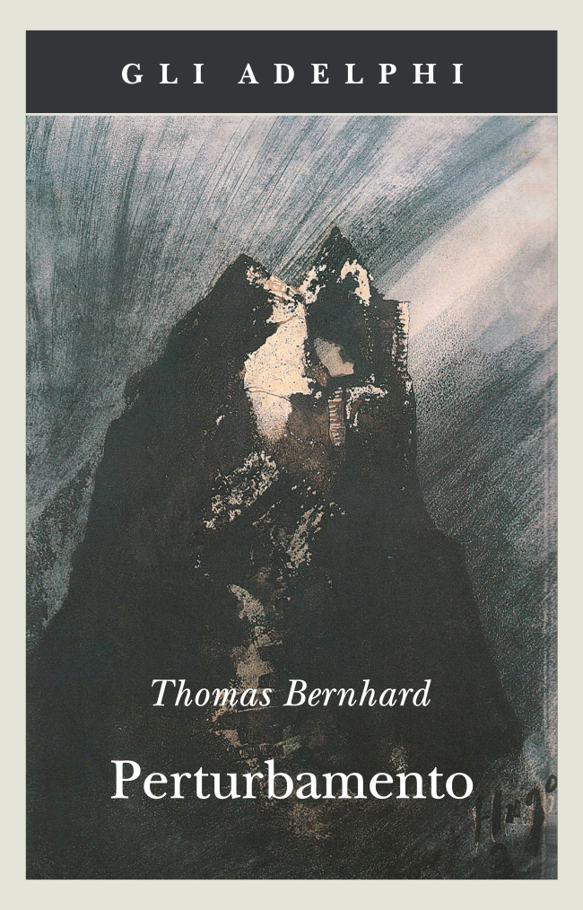
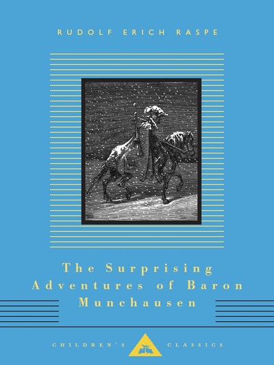
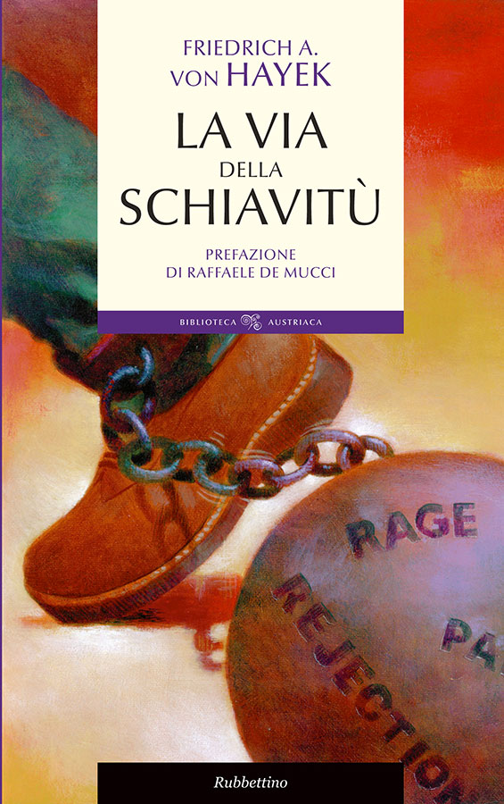

29:02 · 8 OPERE
Menti raffinatissime. Minuscolo invito alla ragione nell’epoca della sragione.
Il filo del discorso
Il contributo, situato dal relatore nel luglio 2020, costruisce una critica delle misure sanitarie attraverso il tema della libertà individuale e della rappresentazione pubblica del pericolo. Pope e Bernhard introducono il contrasto fra ragione e crisi del pensiero; il richiamo alle «menti raffinatissime» di Falcone viene poi trasferito, in forma dichiaratamente ipotetica, alla comunicazione della pandemia. Dr Divago interpreta la mascherina come segno visibile dell’emergenza e, insieme, come promessa di protezione capace di rafforzare l’autorità politica. Le affermazioni del video sulla respirazione e sull’inefficacia delle protezioni non vengono assunte come fatti medici: necessitano di correzioni e di riscontri distinti dall’argomentazione politica. Il discorso pone in tensione autonomia del corpo e responsabilità verso le persone vulnerabili, confronta diverse cause di morte e richiama la capacità ospedaliera. Jefferson, Hayek e Platone sostengono infine l’allarme per il passaggio da cittadinanza attiva a obbedienza. La conclusione descrive l’alienazione come perdita di rapporti autentici e di potere sulla propria vita, contrapponendole il pensiero come forma di resistenza. La scheda separa questi giudizi dalle prove epidemiologiche e dai necessari criteri di proporzionalità e legittimità delle singole misure.
I libri nel discorso
The First Satire of the Second Book of Horace Imitated
Identificazione probabile
Copertina della raccolta: Copertina della raccolta The Major Works, Oxford World’s Classics, 2008, a cura di Pat Rogers, 768 pagine; ISBN 9780199537617. Il testo citato è incluso a pagina 265 e seguenti, non è l’intero volume.
Copertina autentica Oxford della raccolta che include il testo, come verificato nell’indice. Non copertina autonoma della poesia né volume identificato come posseduto dal relatore.
Pope, feast of reason: localizzazione probabile nella prima satira del secondo libro di Orazio imitata, versi 127–128; titolo non pronunciato.
Passaggio 0:16 ↗ · Fonti e libro ↗
Perturbamento
Identificazione probabile
Copertina: Adelphi, gli Adelphi 83, catalogo 1995, a cura di Eugenio Bernardi, 239 pagine, ISBN 9788845911743. Originale Verstörung, 1967; traduzione italiana già apparsa nel 1981.
Copertina autentica Adelphi, Thomas Bernhard e Perturbamento, immagine L’Ermitage di Victor Hugo. Non è Antichi maestri, che non viene assegnato alla citazione; il titolo del romanzo non è pronunciato e la pagina della traduzione italiana non è localizzata.
Thomas Bernhard e catastrofe che comincia alzandosi dal letto: collegamento probabile a Verstörung/Perturbamento, titolo non pronunciato.
Passaggio 0:41 ↗ · Fonti e libro ↗
1984
Identificazione probabile
Copertina: Newton Compton · edizione illustrativa
Covid 1984: gioco polemico che allude probabilmente al romanzo, senza nominarne l’autore o discuterne il testo.
Passaggio 7:07 ↗ · Fonti e libro ↗
Orlando furioso
Identificazione probabile
Copertina: Feltrinelli · Universale Economica Classici · 2016 · edizione in due volumi
Copertina editoriale di riferimento per l’edizione in due volumi indivisibili; l’immagine non mostra entrambi i volumi e non identifica un esemplare del video.
Astolfo sulla Luna: allusione identificabile all’Orlando furioso, canto XXXIV; titolo e autore non pronunciati.
Passaggio 10:16 ↗ · Fonti e libro ↗
The Surprising Adventures of Baron Munchausen
Identificazione probabile
Copertina: Everyman’s Library Children’s Classics, catalogo Penguin Australia 15 novembre 2012, ISBN 9781857155181, illustrazioni di Gustave Doré. Il catalogo web indica 192 pagine e quello 2023–24 ne indica 208; tiratura non stabilita. Racconti di Raspe apparsi dal 1785.
Copertina autentica Everyman, fondo azzurro e illustrazione di Doré, autore e titolo inglese leggibili. Non prova quale redazione Raspe/Bürger fosse evocata dal relatore; l’allusione non è una cronaca storica del barone.
Münchhausen che cavalca una palla di cannone: allusione alla tradizione dei racconti, non edizione o autore pronunciati.
Passaggio 10:21 ↗ · Fonti e libro ↗
Dichiarazione d’indipendenza degli Stati Uniti d’America
Facsimile: incisione di Stone del 1823: Documento del 4 luglio 1776 · incisione di William J. Stone del 1823
Riproduzione documentaria dell’incisione di Stone del 1823 conservata dai National Archives. Non è la pergamena originale del 1776, né la copertina di un libro.
Thomas Jefferson e Dichiarazione di indipendenza, con citazione dell’incipit sulle verità evidenti di per sé.
Passaggio 21:35 ↗ · Fonti e libro ↗
La via della schiavitù
Identificazione probabile
Copertina: Rubbettino, Biblioteca Austriaca, 2011, prefazione di Raffaele De Mucci, 296 pagine; ISBN 9788849830842. Originale The Road to Serfdom, 1944.
Copertina autentica Rubbettino con autore, titolo e prefazione leggibili, corde e oggetti segnati da parole sul potere. La citazione non dimostra l’uso di questa edizione.
Hayek, controllo di tutti i mezzi e determinazione dei fini: rinvio probabile al capitolo VII di The Road to Serfdom, titolo non pronunciato.
Passaggio 22:52 ↗ · Fonti e libro ↗
La Repubblica
Identificazione probabile
Copertina: Laterza · La Repubblica · edizione con testo a fronte di riferimento
Immagine associata all’ISBN di riferimento e controllata visivamente; edizione e traduzione non identificate come quelle citate o lette nel video.
Platone, custodi come cani e tiranno come lupo, democrazia che genera tirannide: rinvio probabile alla Repubblica II e VIII.
Passaggio 23:30 ↗ · Fonti e libro ↗